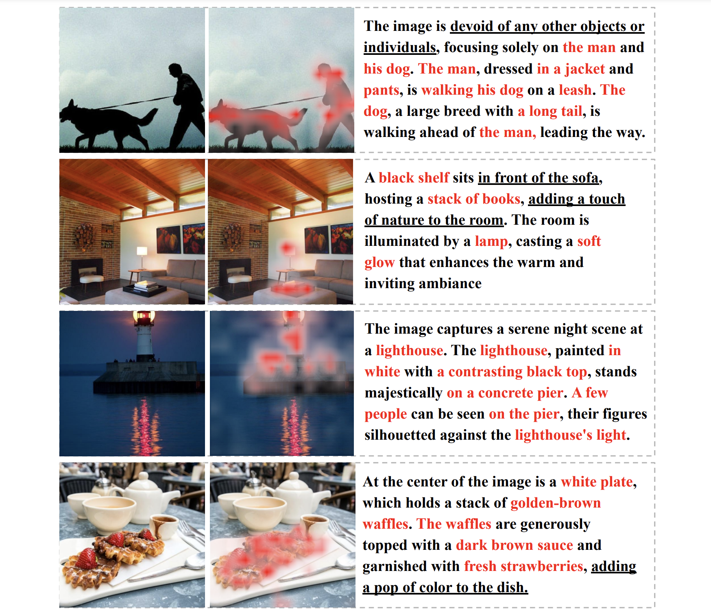
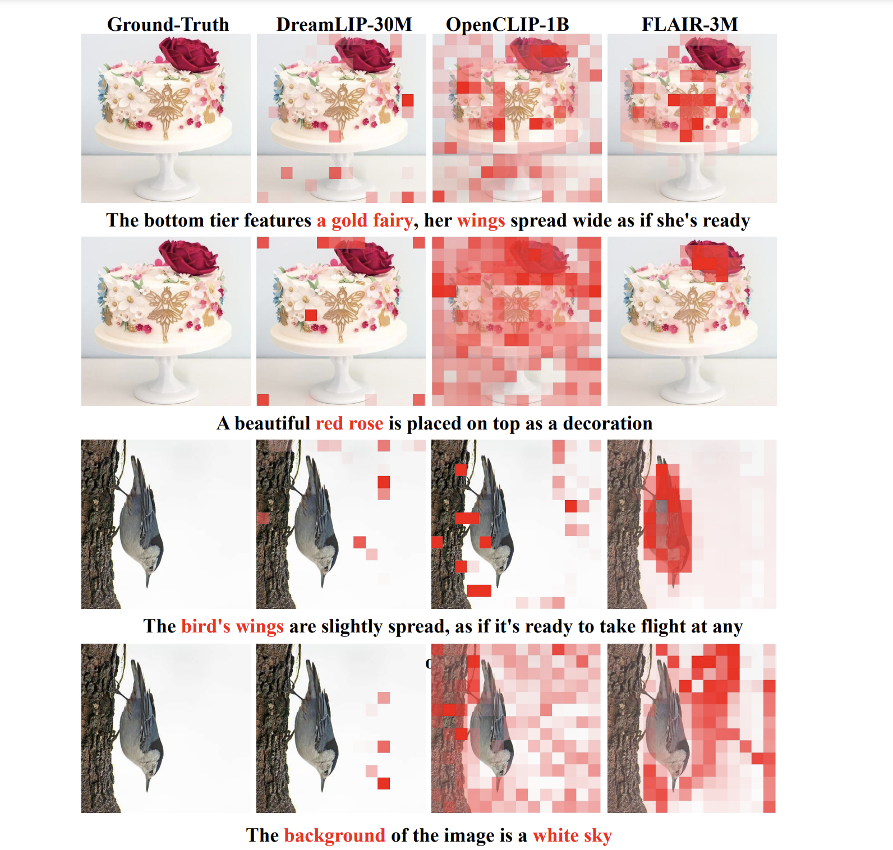

CLIP has shown impressive results in aligning images and texts at scale. However, its ability to capture detailed visual features remains limited because CLIP matches images and texts at a global level. To address this issue, we propose FLAIR, Fine-grained Language-informed Image Representations, an approach that utilizes long and detailed image descriptions to learn localized image embeddings. By sampling diverse sub-captions that describe fine-grained details about an image, we train our vision-language model to produce not only global embeddings but also text-specific image representations. Our model introduces text-conditioned attention pooling on top of local image tokens to produce fine-grained image representations that excel at retrieving detailed image content. We achieve state-of-the-art performance on both, existing multimodal retrieval benchmarks, as well as, our newly introduced fine-grained retrieval task which evaluates vision-language models’ ability to retrieve partial image content. Furthermore, our experiments demonstrate the effectiveness of FLAIR trained on 30M image-text pairs in capturing fine-grained visual information, including zero-shot semantic segmentation, outperforming models trained on billions of pairs.
FLAIR is a CLIP-like vision-language model, featuring text-conditioned attention pooling. Different from CLIP (directly using global image token) and SigLIP (using learnable global query to pool the local image tokens), FLAIR utilizes global text token as query to pool the local image tokens. On top of that, FLAIR also matches the global image token with the global text token.
In Fig.2 we see an overview of FLAIR's methodology. FLAIR uses datasets with synthetic captions generated by MLLMs. FLAIR samples diverse captions -- various combinations of sub-captions, serving for both multiple positive and negative captions for each image. FLAIR uses text-conditioned attention pooling to generate fine-grained text-conditioned image representations for each sub-caption, then enforce the alignment via Text-conditioned Sigmoid Loss and the Multi-positive Sigmoid Loss.
We measure FLAIR's performance in zero-shot standard, fine-grained, long image-text retrieval, zero-shot semantic segmentation, zero-shot image classification.
Including attention map visualization and token-wise similarity.
BibTex Code Here